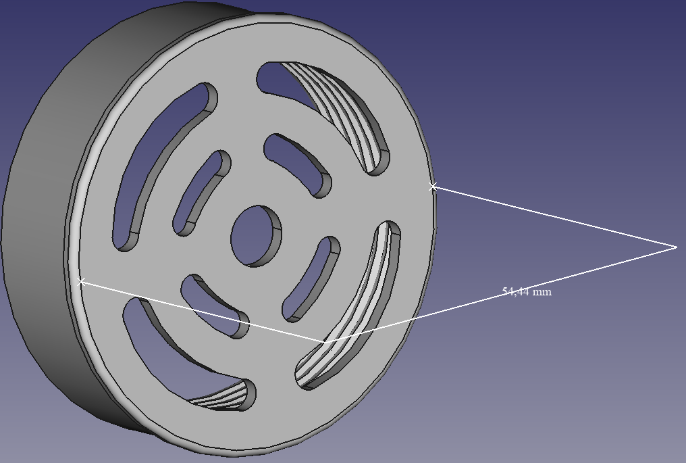
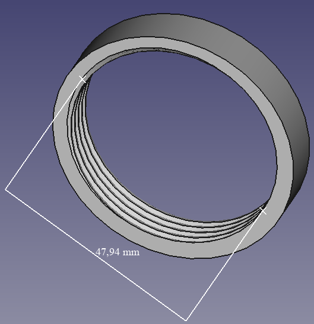
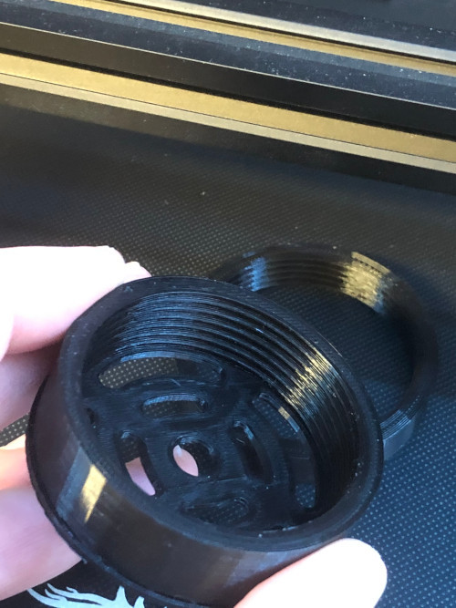

10:31:38 CET Good morning! Today I raise my cup off coffee for Sweden, the national day is today .
20:26:52 CET A full day of studying, a full weekend of studying actually... I never EVER studied as much as J. But, if I compare Sweden to Belgium, it's still the same today.
21:32:39 CET I managed to designThe CAD modeling was done in FreeCad. The solid was prepared in Cura. (the stepped approachI first designed and printed this to make sure if the inner thread fitted.) and print a new practical thing I came up with this morning (it was early, let's say it was hours before sunrise) in my bed. My conclusion was that I needed an "internal water filter cap" attached to one of the inlet tubes on the pump that I have in the pond. It's getting jammed up mainly due to the leaves that fall into the water. Anyway, the interesting is how the trial of thought goes and how things finally get created - the design and development and, as a bonus, I get to make it and enjoy the result. Just like a computer program, a solution or a project (see the parallel) that comes to an end. ...And how about the resultI am very happy with the result - 1 hour of design and 2 hours to print., you wonder? It turned out brilliantly, fitted perfectly on the tube!
2021-06-03 08:23:24 CET "There is still a lot to learn and there is always great stuff out there. Even mistakes can be wonderful." -Robin Williams